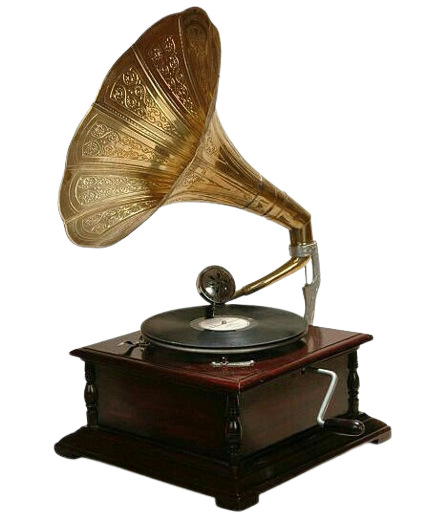

Frederic Chopin was a Polish virtuoso pianist and composer well-known for his solo piano concerts during the Romantic Period. I really enjoy his music, especially his Nocturnes (which he popularized) because of the emotional experession it can bring despite having no lyrics.
Niccolo Paganini was an Italian violin composer and virtuoso. He was known for his extroardinary technical skill and insanely difficult pieces, hence abtaining the nickname "The Devil's Violinist".

Hamilton was a hiphop musical written by composer Lin-Manuel Miranda, telling the story of Alexander Hamilton, one of the Founding Fathers of the United States.
Robert F. Fox, better known by his preferred name Toby Fox, and formerly Toby "Radiation" Fox, is an indie game developer and music composer born on the 11th of October, 1991, who occasionally goes by the internet pseudonym FwugRadiation. He is the creator of the games Deltarune and Undertale. He also composed the soundtrack for both games.